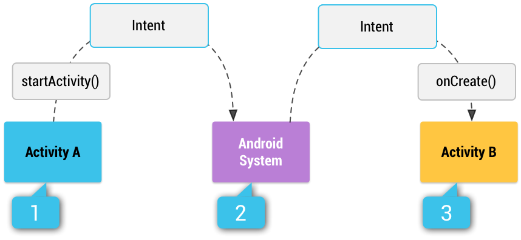

Intent 是一种消息对象，可用于向另一个应用组件请求执行某项操作。虽然 Intent 可以通过多种方式促进组件间通信，但它主要有以下三种基本用途：
- 启动 Activity
Activity代表应用中的一个屏幕。将Intent传给startActivity()，可以启动一个新的Activity实例。Intent描述要启动的 Activity，并携带所需的数据。如果希望在 Activity 完成后收到返回结果，请调用
startActivityForResult()。你的 Activity 会在自身的onActivityResult()回调中，以一个独立的Intent对象接收结果。更多信息请参阅 Activity 指南。 - 启动 Service
Service是一种在后台执行操作、不提供用户界面的组件。在 Android 5.0（API 级别 21）及更高版本上，可以使用JobScheduler启动 Service。有关JobScheduler的更多信息，请参阅其 API 参考文档。在 Android 5.0（API 级别 21）之前的版本中，可以使用
Service类的方法启动 Service。将Intent传给startService()，可以启动 Service 来执行一次性操作，例如下载文件。Intent描述要启动的 Service，并携带所需的数据。如果 Service 采用客户端—服务器接口设计，可以从另一个组件将
Intent传给bindService()，从而绑定到该 Service。更多信息请参阅 Service 指南。 - 发送广播
广播是一种任何应用都可以接收的消息。系统会针对各种系统事件发送广播，例如系统启动或设备开始充电时。将
Intent传给sendBroadcast()或sendOrderedBroadcast()，可以向其他应用发送广播。
本页其余部分说明 Intent 的工作原理及使用方法。有关相关信息，请参阅与其他应用交互和分享内容。
Intent 类型
Intent 分为两种类型：
- 显式 Intent 通过指定完整的
ComponentName，明确哪个应用的哪个组件来处理该 Intent。通常会使用显式 Intent 启动自己应用中的组件，因为你知道要启动的 Activity 或 Service 的类名。例如，响应用户操作时，可以在应用内启动一个新的 Activity，或者启动一个 Service 在后台下载文件。 - 隐式 Intent 不指定具体组件，而是声明一个要执行的通用操作，使其他应用中的组件有机会处理它。例如，如果希望向用户展示地图上的某个位置，可以使用隐式 Intent，请求另一个具备相应能力的应用在地图上显示该位置。
图 1 展示了启动 Activity 时如何使用 Intent。当 Intent 对象明确指定某个 Activity 组件的名称时，系统会立即启动该组件。

图 1. 隐式 Intent 如何通过系统传递并启动另一个 Activity：[1] Activity A 创建一个带有操作描述的 Intent，并将其传给 startActivity()。[2] Android 系统在所有应用中查找与该 Intent 匹配的 Intent Filter。找到匹配项后，[3] 系统调用匹配 Activity（Activity B）的 onCreate() 方法，并传入该 Intent，从而启动它。
使用隐式 Intent 时，Android 系统会将 Intent 的内容，与设备上其他应用清单文件中声明的 Intent Filter 进行比较，以找到适合启动的组件。如果 Intent 与某个 Intent Filter 匹配，系统就会启动该组件，并向它传递 Intent 对象。如果有多个 Intent Filter 与之匹配，系统会显示一个对话框，让用户选择使用哪个应用。
Intent Filter 是应用清单文件中的一种表达式，用于指定组件希望接收哪些类型的 Intent。例如，为 Activity 声明 Intent Filter 后，其他应用就可以通过某种 Intent 直接启动该 Activity。同样，如果没有为 Activity 声明任何 Intent Filter，则只能通过显式 Intent 启动它。
警告：为确保应用安全，启动 Service 时始终使用显式 Intent，并且不要为 Service 声明 Intent Filter。使用隐式 Intent 启动 Service 存在安全风险，因为你无法确定哪个 Service 会响应 Intent，用户也看不到究竟启动了哪个 Service。从 Android 5.0（API 级别 21）开始，如果使用隐式 Intent 调用 bindService()，系统会抛出异常。
构建 Intent
Intent 对象携带两类信息：一类供 Android 系统决定启动哪个组件，例如应接收 Intent 的确切组件名称或组件类别；另一类供接收组件正确执行操作，例如要执行的操作和操作涉及的数据。
Intent 包含的主要信息如下：
- 组件名称
- 要启动的组件的名称。
这是可选信息，但也是使 Intent 成为显式 Intent 的关键信息。显式意味着 Intent 应当仅传递给由组件名称指定的应用组件。如果没有组件名称，Intent 就是隐式的，系统会根据 Intent 中的其他信息（例如下文介绍的操作、数据和类别），决定哪个组件应接收它。如果需要启动应用中的某个特定组件，就应指定组件名称。
注意：启动
Service时，始终指定组件名称。否则，你无法确定哪个 Service 会响应 Intent，用户也看不到启动了哪个 Service。Intent的这个字段是一个ComponentName对象。你可以使用目标组件的完全限定类名（包括应用包名）指定它，例如com.example.ExampleActivity。可以使用setComponent()、setClass()、setClassName()或Intent构造函数设置组件名称。 - 操作
- 一个字符串，用于指定要执行的通用操作，例如查看或选择。
对于广播 Intent，这表示已经发生且正在报告的操作。操作在很大程度上决定了 Intent 其余部分的结构，尤其是 data 和 extras 中包含的信息。
你可以为应用内部使用的 Intent 定义自己的操作，也可以让其他应用用这些操作调用你应用中的组件；不过，通常会使用
Intent类或其他框架类定义的操作常量。以下是一些常用于启动 Activity 的操作：ACTION_VIEW- 如果有一些信息可以由 Activity 展示给用户，例如要在图库应用中查看的照片，或要在地图应用中查看的地址，可以在传给
startActivity()的 Intent 中使用此操作。 ACTION_SEND- 也称为分享 Intent。如果有一些数据可以让用户通过其他应用（例如电子邮件应用或社交分享应用）分享，就应在传给
startActivity()的 Intent 中使用此操作。
更多定义通用操作的常量，请参阅
Intent类参考文档。其他操作在 Android 框架的其他位置定义，例如Settings中定义了打开系统“设置”应用中特定页面的操作。可以使用
setAction()或Intent构造函数为 Intent 指定操作。如果定义自己的操作，请务必使用应用包名作为前缀，如下例所示：
Kotlin
const val ACTION_TIMETRAVEL = "com.example.action.TIMETRAVEL"Java
static final String ACTION_TIMETRAVEL = "com.example.action.TIMETRAVEL"; - 数据
- 用于引用操作对象数据的 URI（一个
Uri对象），以及／或者该数据的 MIME 类型。所提供数据的类型通常由 Intent 的操作决定。例如，如果操作是ACTION_EDIT，data 就应包含待编辑文档的 URI。创建 Intent 时，除了数据 URI，通常还需要指定数据类型，也就是 MIME 类型。例如，即使 URI 格式相似，能够显示图片的 Activity 也很可能无法播放音频文件。指定数据的 MIME 类型，有助于 Android 系统找到最适合接收 Intent 的组件。不过，有时可以从 URI 推断 MIME 类型，尤其是当数据使用
content:URI 时。content:URI 表示数据位于设备上，并由ContentProvider管理；该内容提供程序会让系统获知数据的 MIME 类型。如果只设置数据 URI，请调用
setData()。如果只设置 MIME 类型，请调用setType()。如有需要，可以使用setDataAndType()同时明确设置两者。警告：如果希望同时设置 URI 和 MIME 类型，不要分别调用
setData()和setType()，因为两者都会将另一项的值清空。始终使用setDataAndType()同时设置 URI 和 MIME 类型。 - 类别
- 一个字符串，包含有关应处理该 Intent 的组件类型的附加信息。Intent 中可以放入任意数量的类别描述，但大多数 Intent 不需要类别。以下是一些常见类别：
CATEGORY_BROWSABLE- 目标 Activity 允许网页浏览器启动它，以显示链接所指向的数据，例如图片或电子邮件消息。
CATEGORY_LAUNCHER- 该 Activity 是任务的初始 Activity，并列在系统的应用启动器中。
完整类别列表请参阅
Intent类说明。可以使用
addCategory()指定类别。
上述属性（组件名称、操作、数据和类别）构成了 Intent 的定义特征。Android 系统通过读取这些属性，能够解析出应启动哪个应用组件。不过，Intent 还可以携带不影响组件解析的附加信息。Intent 也可以提供以下信息：
- 附加数据（Extras）
- 键值对，用来携带完成所请求操作所需的附加信息。正如某些操作会使用特定类型的数据 URI 一样，某些操作也会使用特定的 extras。
可以使用各种
putExtra()方法添加附加数据，每个方法都接收两个参数：键名和值。也可以创建一个Bundle对象，将全部附加数据放入其中，然后通过putExtras()将该Bundle加入Intent。例如，使用
ACTION_SEND创建发送电子邮件的 Intent 时，可以通过EXTRA_EMAIL键指定收件人，通过EXTRA_SUBJECT键指定主题。Intent类为标准化数据类型定义了许多EXTRA_*常量。如果需要为你应用接收的 Intent 定义自己的 extra 键，请务必使用应用包名作为前缀，如下例所示：Kotlin
const val EXTRA_GIGAWATTS = "com.example.EXTRA_GIGAWATTS"Java
static final String EXTRA_GIGAWATTS = "com.example.EXTRA_GIGAWATTS";警告：发送预期由其他应用接收的 Intent 时，不要使用
Parcelable或Serializable数据。如果某个应用尝试访问Bundle对象中的数据，却无法访问被打包或序列化的类，系统就会抛出RuntimeException。 - 标志（Flags）
- 标志在
Intent类中定义，充当 Intent 的元数据。标志可以指示 Android 系统如何启动 Activity，例如该 Activity 应属于哪个任务；也可以指示系统在 Activity 启动后如何对待它，例如是否将其纳入最近使用的 Activity 列表。更多信息请参阅
setFlags()方法。
显式 Intent 示例
显式 Intent 用于启动特定的应用组件，例如应用中的某个 Activity 或 Service。要创建显式 Intent，请为 Intent 对象定义组件名称——其他所有 Intent 属性都是可选的。
例如，如果在应用中构建了一个名为 DownloadService 的服务，用于从网络下载文件，可以使用以下代码启动它：
Kotlin
// Executed in an Activity, so 'this' is the Context
// The fileUrl is a string URL, such as "http://www.example.com/image.png"
val downloadIntent = Intent(this, DownloadService::class.java).apply {
data = Uri.parse(fileUrl)
}
startService(downloadIntent)Java
// Executed in an Activity, so 'this' is the Context
// The fileUrl is a string URL, such as "http://www.example.com/image.png"
Intent downloadIntent = new Intent(this, DownloadService.class);
downloadIntent.setData(Uri.parse(fileUrl));
startService(downloadIntent);Intent(Context, Class) 构造函数提供应用的 Context，以及表示组件的 Class 对象。因此，此 Intent 会显式启动应用中的 DownloadService 类。
有关构建和启动服务的更多信息，请参阅服务指南。
隐式 Intent 示例
隐式 Intent 指定一个操作，可以调用设备上任何能够执行该操作的应用。当你的应用无法执行某项操作，但其他应用可能可以，而你希望用户选择使用哪个应用时，隐式 Intent 很有用。
例如，如果希望用户将某些内容分享给其他人，可以创建一个具有 ACTION_SEND 操作的 Intent，并添加指定分享内容的附加数据。使用该 Intent 调用 startActivity() 时，用户可以选择通过哪个应用分享内容。
Kotlin
// Create the text message with a string.
val sendIntent = Intent().apply {
action = Intent.ACTION_SEND
putExtra(Intent.EXTRA_TEXT, textMessage)
type = "text/plain"
}
// Try to invoke the intent.
try {
startActivity(sendIntent)
} catch (e: ActivityNotFoundException) {
// Define what your app should do if no activity can handle the intent.
}Java
// Create the text message with a string.
Intent sendIntent = new Intent();
sendIntent.setAction(Intent.ACTION_SEND);
sendIntent.putExtra(Intent.EXTRA_TEXT, textMessage);
sendIntent.setType("text/plain");
// Try to invoke the intent.
try {
startActivity(sendIntent);
} catch (ActivityNotFoundException e) {
// Define what your app should do if no activity can handle the intent.
}调用 startActivity() 时，系统会检查所有已安装的应用，确定哪些应用可以处理这类 Intent（具有 ACTION_SEND 操作并携带“text/plain”数据的 Intent）。如果只有一个应用可以处理，它会立即打开并接收 Intent。如果没有其他应用可以处理，你的应用可以捕获发生的 ActivityNotFoundException。如果多个 Activity 都接受此 Intent，系统会显示一个类似图 2 的对话框，让用户选择使用哪个应用。
有关启动其他应用的更多信息，也可以参阅将用户引导至其他应用指南。
图 2。选择器对话框。
接收隐式 Intent
要声明应用能够接收哪些隐式 Intent，请在清单文件中，使用 <intent-filter> 元素，为每个应用组件声明一个或多个 Intent Filter。每个 Intent Filter 都根据 Intent 的操作、数据和类别，指定它接受的 Intent 类型。只有当隐式 Intent 能通过你的某个 Intent Filter 时，系统才会将它传递给应用组件。
注意：显式 Intent 始终会传递给其目标，无论组件声明了哪些 Intent Filter。
应用组件应为它能够执行的每项独特工作声明独立的过滤器。例如，图库应用中的一个 Activity 可以有两个过滤器：一个用于查看图片，另一个用于编辑图片。Activity 启动时，会检查 Intent，并根据 Intent 中的信息决定如何表现（例如，是否显示编辑器控件）。
每个 Intent Filter 都由应用清单文件中的 <intent-filter> 元素定义，嵌套在对应的应用组件中（例如 <activity> 元素）。
对于每个包含 <intent-filter> 元素的应用组件，都应显式设置 android:exported 的值。此属性表明其他应用是否可以访问该组件。在某些情况下，例如 Intent Filter 包含 LAUNCHER 类别的 Activity，将此属性设为 true 很有用。其他情况下，将此属性设为 false 更安全。
警告：如果应用中的 Activity、Service 或广播接收器使用了 Intent Filter，却没有显式设置 android:exported 的值，则应用无法安装到运行 Android 12 或更高版本的设备上。
在 <intent-filter> 内，可以使用以下三种元素中的一个或多个，指定要接受的 Intent 类型：
<action>- 在
name属性中声明接受的 Intent 操作。值必须是操作的字符串字面值，而不是类常量。 <data>- 使用一个或多个属性声明接受的数据类型，这些属性指定数据 URI 的各个部分（
scheme、host、port、path）及 MIME 类型。 <category>- 在
name属性中声明接受的 Intent 类别。值必须是操作的字符串字面值，而不是类常量。注意：要接收隐式 Intent，Intent Filter 中必须包含
CATEGORY_DEFAULT类别。startActivity()和startActivityForResult()方法会将所有 Intent 都视为声明了CATEGORY_DEFAULT类别。如果没有在 Intent Filter 中声明此类别，就不会有任何隐式 Intent 解析到你的 Activity。
例如，以下 Activity 声明包含一个 Intent Filter，用于在数据类型为文本时接收 ACTION_SEND Intent：
<activity android:name="ShareActivity" android:exported="false">
<intent-filter>
<action android:name="android.intent.action.SEND"/>
<category android:name="android.intent.category.DEFAULT"/>
<data android:mimeType="text/plain"/>
</intent-filter>
</activity>可以创建一个包含多个 <action>、<data> 或 <category> 实例的过滤器。如果这样做，必须确保组件能够处理这些过滤器元素的任何及所有组合。
如果希望处理多种 Intent，但只接受操作、数据和类别类型的特定组合，就需要创建多个 Intent Filter。
测试隐式 Intent 是否符合过滤器时，会将 Intent 与三种元素逐一比较。要传递给组件，Intent 必须通过全部三项测试。只要有一项不匹配，Android 系统就不会将 Intent 传递给组件。不过，由于一个组件可以有多个 Intent Filter，未通过其中一个过滤器的 Intent 可能通过另一个过滤器。系统如何解析 Intent 的更多信息，见下文的 Intent 解析一节。
注意：使用 Intent Filter 并不是阻止其他应用启动你的组件的安全方式。虽然 Intent Filter 限制组件只响应某些类型的隐式 Intent，但如果其他应用的开发者确定了你的组件名称，该应用仍有可能通过显式 Intent 启动你的组件。如果必须确保只有你自己的应用才能启动某个组件，就不要在清单中声明 Intent Filter，而应将该组件的 exported 属性设为 "false"。
类似地，为避免意外运行其他应用的 Service，始终使用显式 Intent 启动自己的服务。
注意：对于所有 Activity，都必须在清单文件中声明 Intent Filter。不过，广播接收器的过滤器可以通过调用 registerReceiver() 动态注册，之后再通过 unregisterReceiver() 取消接收器的注册。这样，应用就可以在运行期间只在某个指定时间段内监听特定广播。
过滤器示例
为了展示 Intent Filter 的一些行为，以下给出一个社交分享应用清单文件中的示例：
<activity android:name="MainActivity" android:exported="true">
<!-- This activity is the main entry, should appear in app launcher -->
<intent-filter>
<action android:name="android.intent.action.MAIN" />
<category android:name="android.intent.category.LAUNCHER" />
</intent-filter>
</activity>
<activity android:name="ShareActivity" android:exported="false">
<!-- This activity handles "SEND" actions with text data -->
<intent-filter>
<action android:name="android.intent.action.SEND"/>
<category android:name="android.intent.category.DEFAULT"/>
<data android:mimeType="text/plain"/>
</intent-filter>
<!-- This activity also handles "SEND" and "SEND_MULTIPLE" with media data -->
<intent-filter>
<action android:name="android.intent.action.SEND"/>
<action android:name="android.intent.action.SEND_MULTIPLE"/>
<category android:name="android.intent.category.DEFAULT"/>
<data android:mimeType="application/vnd.google.panorama360+jpg"/>
<data android:mimeType="image/*"/>
<data android:mimeType="video/*"/>
</intent-filter>
</activity>第一个 Activity，MainActivity，是应用的主要入口点——用户通过启动器图标首次启动应用时打开的 Activity：
ACTION_MAIN操作表明这是主要入口点，并且不期望接收任何 Intent 数据。CATEGORY_LAUNCHER类别表明应将此 Activity 的图标放在系统应用启动器中。如果<activity>元素没有通过icon指定图标，系统就使用<application>元素中的图标。
两者必须配对使用，Activity 才会出现在应用启动器中。
第二个 Activity，ShareActivity，旨在支持分享文本和媒体内容。虽然用户可以从 MainActivity 导航到它，但也可以从另一个应用直接进入 ShareActivity，只要该应用发出的隐式 Intent 与两个 Intent Filter 中的一个匹配。
注意：MIME 类型 application/vnd.google.panorama360+jpg 是一种指定全景照片的特殊数据类型，可以使用 Google 全景 API 处理它。
Intent 解析
当系统收到用于启动 Activity 的隐式 Intent 时，会从以下三个方面将它与 Intent Filter 比较，以查找最适合该 Intent 的 Activity：
- 操作。
- 数据（包括 URI 和数据类型）。
- 类别。
以下各节介绍如何根据应用清单文件中的 Intent Filter 声明，将 Intent 匹配到适当的组件。
操作测试
要指定接受的 Intent 操作，Intent Filter 可以声明零个或多个 <action> 元素，如以下示例所示：
<intent-filter>
<action android:name="android.intent.action.EDIT" />
<action android:name="android.intent.action.VIEW" />
...
</intent-filter>要通过此过滤器，Intent 中指定的操作必须与过滤器列出的某个操作匹配。
如果过滤器没有列出任何操作，Intent 就没有可以匹配的内容，因此所有 Intent 都无法通过测试。不过，如果 Intent 没有指定操作，只要过滤器包含至少一个操作，它就能通过测试。
类别测试
要指定接受的 Intent 类别，Intent Filter 可以声明零个或多个 <category> 元素，如以下示例所示：
<intent-filter>
<category android:name="android.intent.category.DEFAULT" />
<category android:name="android.intent.category.BROWSABLE" />
...
</intent-filter>要使 Intent 通过类别测试，Intent 中的每个类别都必须与过滤器中的一个类别匹配。反过来则不必如此——Intent Filter 可以声明比 Intent 中指定的更多类别，Intent 仍然可以通过。因此，无论过滤器中声明了哪些类别，没有类别的 Intent 总能通过此项测试。
注意：Android 会自动为传给 startActivity() 和 startActivityForResult() 的所有隐式 Intent 应用 CATEGORY_DEFAULT 类别。如果希望 Activity 接收隐式 Intent，它的 Intent Filter 中必须包含 "android.intent.category.DEFAULT" 类别，如前面的 <intent-filter> 示例所示。
数据测试
要指定接受的 Intent 数据，Intent Filter 可以声明零个或多个 <data> 元素，如以下示例所示：
<intent-filter>
<data android:mimeType="video/mpeg" android:scheme="http" ... />
<data android:mimeType="audio/mpeg" android:scheme="http" ... />
...
</intent-filter>每个 <data> 元素都可以指定 URI 结构和数据类型（MIME 媒体类型）。URI 的每个部分都是一个独立属性：scheme、host、port 和 path：
<scheme>://<host>:<port>/<path>
以下示例展示了这些属性的可能值：
content://com.example.project:200/folder/subfolder/etc
在此 URI 中，scheme 是 content，host 是 com.example.project，port 是 200，path 是 folder/subfolder/etc。
这些属性在 <data> 元素中都是可选的，但存在依次依赖关系：
- 如果没有指定 scheme，host 会被忽略。
- 如果没有指定 host，port 会被忽略。
- 如果 scheme 和 host 都没有指定，path 会被忽略。
将 Intent 中的 URI 与过滤器中的 URI 规格比较时，只比较过滤器中包含的 URI 部分。例如：
- 如果过滤器只指定了 scheme，所有具有该 scheme 的 URI 都与过滤器匹配。
- 如果过滤器指定了 scheme 和 authority，但没有指定 path，那么所有具有相同 scheme 和 authority 的 URI 都能通过过滤器，无论其 path 是什么。
- 如果过滤器指定了 scheme、authority 和 path，那么只有具有相同 scheme、authority 和 path 的 URI 才能通过过滤器。
注意：路径规格可以包含通配符星号（*），从而只要求路径名称部分匹配。
数据测试会同时将 Intent 中的 URI 和 MIME 类型，与过滤器中指定的 URI 和 MIME 类型比较。规则如下：
- 既不包含 URI、也不包含 MIME 类型的 Intent，只有在过滤器也未指定任何 URI 或 MIME 类型时，才能通过测试。
- 包含 URI 但没有 MIME 类型（既没有显式指定，也无法从 URI 推断）的 Intent，只有在其 URI 与过滤器的 URI 格式匹配，并且过滤器同样没有指定 MIME 类型时，才能通过测试。
- 包含 MIME 类型但没有 URI 的 Intent，只有在过滤器列出了相同的 MIME 类型，并且未指定 URI 格式时，才能通过测试。
- 同时包含 URI 和 MIME 类型（显式指定或可从 URI 推断）的 Intent，只有在该类型与过滤器中列出的某种类型匹配时，才能通过 MIME 类型部分的测试。它可以在以下任一情况下通过 URI 部分的测试：URI 与过滤器中的某个 URI 匹配；或者它具有
content:或file:URI，而过滤器没有指定 URI。换句话说，如果组件的过滤器只列出 MIME 类型，就假定该组件支持content:和file:数据。
注意：如果 Intent 指定了 URI 或 MIME 类型，而 <intent-filter> 中没有 <data> 元素，数据测试就会失败。
最后一条规则，即规则（d），反映了对组件能够从文件或内容提供程序获取本地数据的预期。因此，过滤器可以只列出数据类型，无需显式指定 content: 和 file: scheme。以下示例展示了一个典型情况：<data> 元素告知 Android，该组件可以从内容提供程序获取图片数据并显示它：
<intent-filter>
<data android:mimeType="image/*" />
...
</intent-filter>指定数据类型但不指定 URI 的过滤器可能最为常见，因为大多数可用数据都由内容提供程序分发。
另一种常见配置是同时包含 scheme 和数据类型的过滤器。例如，下面这样的 <data> 元素会告知 Android，该组件可以从网络获取视频数据来执行操作：
<intent-filter>
<data android:scheme="http" android:mimeType="video/*" />
...
</intent-filter>Intent 匹配
将 Intent 与 Intent Filter 匹配，不仅是为了找到要激活的目标组件，也是为了了解设备上组件集合的某些信息。例如，主屏幕应用会查找 Intent Filter 中指定了 ACTION_MAIN 操作和 CATEGORY_LAUNCHER 类别的所有 Activity，以填充应用启动器。只有当 Intent 中的操作和类别与过滤器匹配时，匹配才会成功，具体见 IntentFilter 类的文档。
你的应用可以采用类似主屏幕应用的方式使用 Intent 匹配。PackageManager 提供一组 query...() 方法，返回能够接受特定 Intent 的所有组件；还提供一组类似的 resolve...() 方法，确定最适合响应 Intent 的组件。例如，queryIntentActivities() 返回能够执行作为参数传入的 Intent 的所有 Activity 列表，queryIntentServices() 则返回类似的服务列表。这两个方法都不会激活组件，只会列出能够响应的组件。对于广播接收器，也有一个类似的方法：queryBroadcastReceivers()。